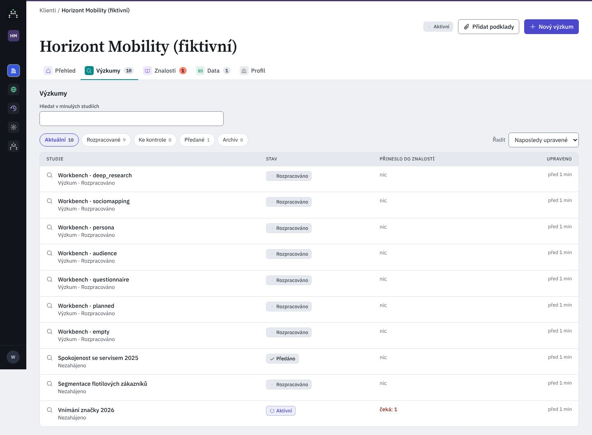
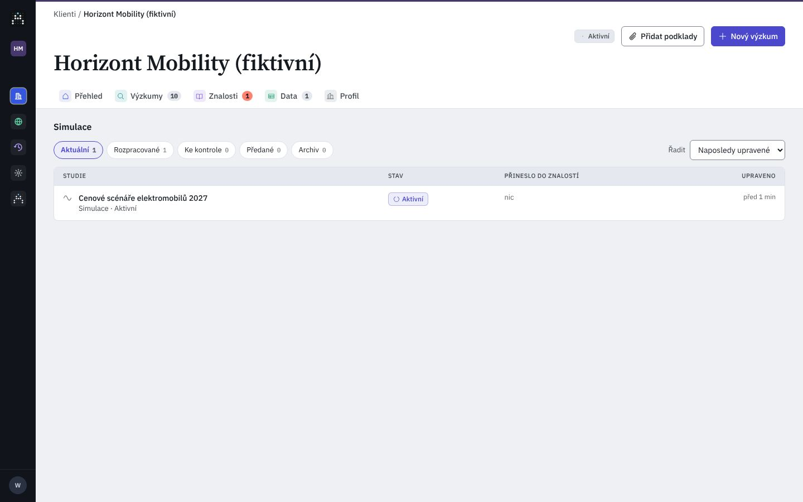
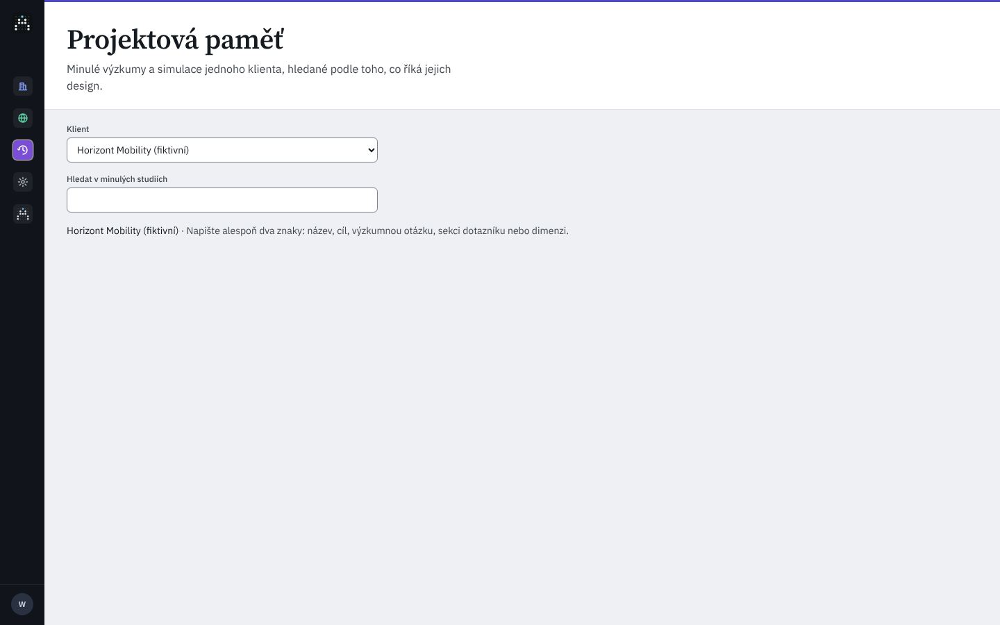

Pivovar Zlatá Hora (fiktivní)
AktivníRodinný pivovar z Vysočiny: tři ležáky a nealko. Výzkum potřebuje k rozhodování o ceně a komunikaci.O klientovi
Rodinný pivovar z Vysočiny: tři ležáky a nealko. Výzkum potřebuje k rozhodování o ceně a komunikaci.O klientovi
{{emptyLine}}
Dobrý design z minula? V menu ⋯ u studie, nebo v hlavičce studie: Použít jako základ nového výzkumu. Projektová paměť jako samostatná stránka není (Nigel 27. 10.); její staré adresy přesměrují sem.
Přenese se design jedné revize: zadání, cíle, výzkumné otázky, dotazník, dimenze a cílová skupina. Data respondentů, výsledky, zprávy ani náklady ne.
Na každém kroku nového výzkumu bude vidět: Design převzat z „{{rName}}“, revize {{revN}}, i se štítky původních běhů.
Tabulka studií jednoho druhu se stavovými filtry; dnes nad ní hledání v projektové paměti, která má i vlastní globální stránku. Nigel 27. 10.: paměť zmizí, Výzkumy mají jedno hledání a každá studie „Použít jako základ nového výzkumu“ (CPR9, CPR14). Kód develop @ a1a9a45c; C/ = apps/web/src/components/aia/clients/, A/ = …/components/aia/, L/ = apps/web/src/lib/.


